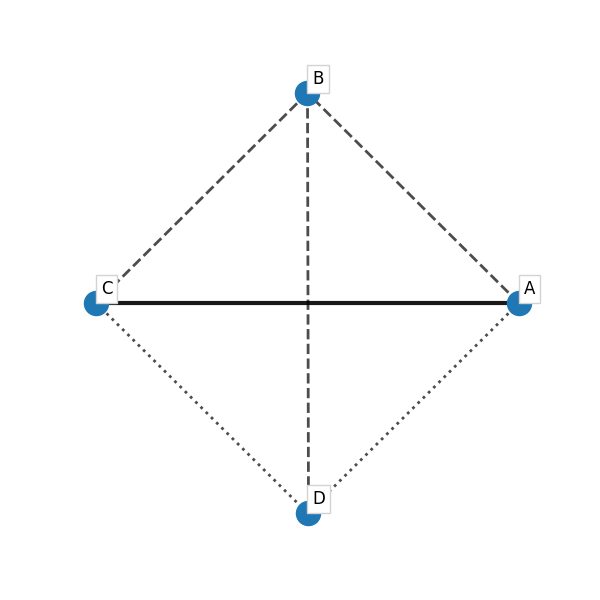
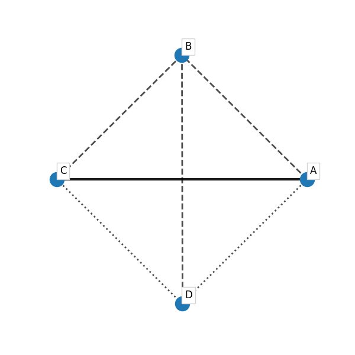
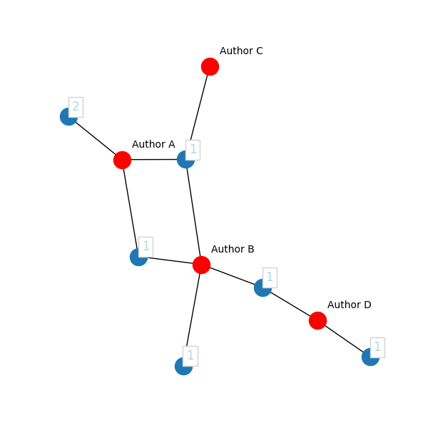
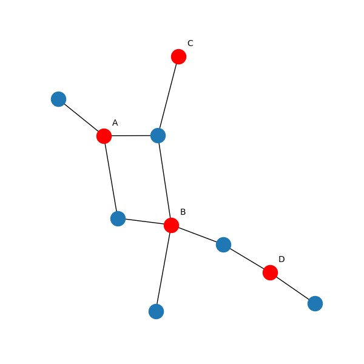

Correlation Maps generation and manipulation¶
-
class
techminer.maps.Map[source]¶ Bases:
object-
correlation_map(terms, edges_75, edges_50, edges_25, other_edges, term_props={})[source]¶ Examples
>>> kwargs = dict( ... terms = list('ABCDE'), ... edges_75 = [('A', 'B')], ... edges_50 = [('B', 'C'), ('A', 'C')], ... edges_25 = [('D', 'E')], ... other_edges = [('B', 'E')], ... ) >>> nxmap = Map() >>> nxmap.correlation_map(**kwargs) >>> plt.savefig('sphinx/images/correlation_map.png')
 
>>> import pandas as pd >>> x = [ 'A', 'A,C', 'B', 'A,B,C', 'B,D', 'A,B', 'A,C'] >>> y = [ 'a', 'a;b', 'b', 'c', 'c;d', 'd', 'c;d'] >>> df = pd.DataFrame( ... { ... 'Authors': x, ... 'Author Keywords': y, ... 'Cited by': list(range(len(x))), ... 'ID': list(range(len(x))), ... } ... ) >>> df Authors Author Keywords Cited by ID 0 A a 0 0 1 A,C a;b 1 1 2 B b 2 2 3 A,B,C c 3 3 4 B,D c;d 4 4 5 A,B d 5 5 6 A,C c;d 6 6 >>> nxmap = Map() >>> kwargs = DataFrame(df).autocorr_map('Authors') >>> nxmap.correlation_map(**kwargs) >>> plt.savefig('sphinx/images/correlation_map_1.png')
>>> nxmap = Map() >>> kwargs = DataFrame(df).autocorr_map('Authors', top_n_links=4) >>> nxmap.correlation_map(**kwargs) >>> plt.savefig('sphinx/images/correlation_map_2.png')

>>> nxmap = Map() >>> kwargs = DataFrame(df).corr_map('Authors', by='Author Keywords', top_n_links=4) >>> nxmap.correlation_map(**kwargs) >>> plt.savefig('sphinx/images/correlation_map_3.png')

-
ocurrence_map(terms, docs, edges, label_terms, label_docs, term_props={}, doc_props={}, edge_props={}, label_term_props={}, label_docs_props={})[source]¶ Cluster map for ocurrence and co-ocurrence matrices.
Examples
>>> terms = ["A", "B", "C", "D"] >>> docs = ["doc#0", "doc#1", "doc#2", "doc#3", "doc#4", "doc#5"] >>> edges = [ ... ("A", "doc#0"), ... ("A", "doc#1"), ... ("B", "doc#1"), ... ("A", "doc#2"), ... ("B", "doc#2"), ... ("C", "doc#2"), ... ("B", "doc#3"), ... ("B", "doc#4"), ... ("D", "doc#4"), ... ("D", "doc#5"), ... ] >>> label_docs = { ... "doc#0": 2, ... "doc#1": 1, ... "doc#2": 1, ... "doc#3": 1, ... "doc#4": 1, ... "doc#5": 1, ... } >>> label_terms = { ... "A": "Author A", ... "B": "Author B", ... "C": "Author C", ... "D": "Author D", ... } >>> nxmap = Map() >>> nxmap.ocurrence_map( ... terms, ... docs, ... edges, ... label_terms, ... label_docs, ... term_props={"node_color": "red"}, ... label_docs_props={"color": "lightblue"}, ... label_term_props=dict(ma="left", rotation=0, fontsize=10, disp=3, bbox=None), ... ) >>> plt.savefig('sphinx/images/network_occurrence_map.png')
>>> import pandas as pd >>> x = [ 'A', 'A', 'A,B', 'B', 'A,B,C', 'D', 'B,D'] >>> df = pd.DataFrame( ... { ... 'Authors': x, ... 'ID': list(range(len(x))), ... } ... ) >>> df Authors ID 0 A 0 1 A 1 2 A,B 2 3 B 3 4 A,B,C 4 5 D 5 6 B,D 6 >>> nxmap = Map() >>> dic1 = DataFrame(df).occurrence_map(column='Authors') >>> dic2 = dict( ... term_props={"node_color": "red"}, ... label_docs_props={"color": "lightblue"}, ... label_term_props=dict(ma="left", rotation=0, fontsize=10, disp=3, bbox=None) ... ) >>> kwargs = {**dic1, **dic2} >>> kwargs {'terms': ['A', 'B', 'C', 'D'], 'docs': ['doc#0', 'doc#1', 'doc#2', 'doc#3', 'doc#4', 'doc#5'], 'edges': [('A', 'doc#0'), ('A', 'doc#1'), ('B', 'doc#1'), ('A', 'doc#2'), ('B', 'doc#2'), ('C', 'doc#2'), ('B', 'doc#3'), ('B', 'doc#4'), ('D', 'doc#4'), ('D', 'doc#5')], 'label_terms': {'A': 'A', 'B': 'B', 'C': 'C', 'D': 'D'}, 'label_docs': {'doc#0': 2, 'doc#1': 1, 'doc#2': 1, 'doc#3': 1, 'doc#4': 1, 'doc#5': 1}, 'term_props': {'node_color': 'red'}, 'label_docs_props': {'color': 'lightblue'}, 'label_term_props': {'ma': 'left', 'rotation': 0, 'fontsize': 10, 'disp': 3, 'bbox': None}} >>> nxmap.ocurrence_map(**kwargs) >>> plt.savefig('sphinx/images/network_occurrence_map_1.png')
-
{kind=link}
{kind=link}
{kind=link}